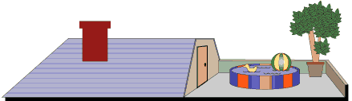

<!DOCTYPE html>
<head>
    <meta charset="UTF-8">
    <title>Конструкция for in</title>

    <script type="text/javascript">
    //Проверка наличия свойства в объекте(свойство 3 этаж)
      var house = {
        roof: "<br/>",
        secondFloor: "<br/>",
        firstFloor: "<br/>",
        basement: "<br/>",
        address: "<p style='color:green'>UK. London. Muswell Hill. N10<hr/>"
      };
      document.write(house.roof);
      if("thirdFloor" in house){
          document.write(house["thirdFloor"]);
      }
      else {
          document.write(house["secondFloor"]);
      }
      document.write(house.secondFloor);
      document.write(house.firstFloor);
      document.write(house.basement);
      document.write(house.address);
      
    </script>

</head>
<body>
</body>
</html>
